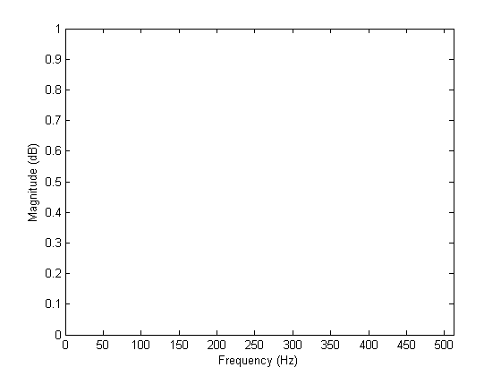
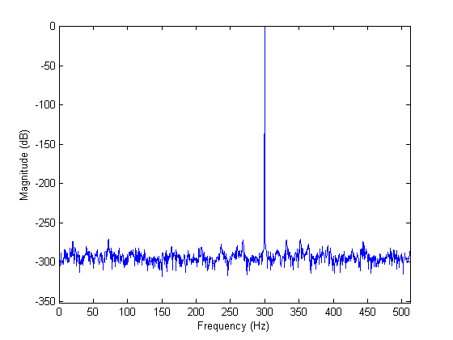

SPECTRUMSCOPE makes it fairly easy to include a spectrum scope in your real-time data acquisition and analysis application. You feed spectrumscope your data, and it plots the FFT - simple enough! It takes 2 steps to use SPECTRUMSCOPE. First, you initialize the scope with basic information needed for the FFT (sample rate, fft length, and number of traces). After that, all you need to do is pass your data to the scope.
This documentation starts with the simplest syntax for the two steps, then provides a few more advanced options.
SPECTRUMSCOPE(FS,NFFT) initializes a spectrum scope in the current axes. This spectrum scope will compute and displays the NFFT-point FFT of a vector signal with sample rate FS Hz.
SPECTRUMSCOPE(S) updates the spectrum scope in the current axes with the FFT of vector S. The scope should first be initialized as above with sample rate and FFT length. If not, the sample rate will be 1 Hz and the FFT length will be the length of S. Differences between the length of S and the specified FFT length are handled the same as MATLAB's built-in FFT function (i.e., zero-padding or truncation, as appropriate).
SPECTRUMSCOPE(FS,NFFT,NTRACES) initializes a spectrum scope in the current axes with NTRACES traces. A trace is a single line on the scope; typically one will display one trace per channel of data. The default for NTRACES is 1. To update a spectrum scope with multiple traces, SPECTRUMSCOPE(S) must specify a matrix S with shorter dimension length = NTRACES. SPECTRUMSCOPE computes the FFT along the longer dimension, assuming the shorter dimension corresponds to traces. I know that this differs from FFT (which always defaults to applying to each column), but I find this deviation convenient.
SPECTRUMSCOPE(HAX, ...) defines the scope in specified axes HAX instead of GCA. i.e., SPECTRUMSCOPE(HAX,FS,NFFT) initializes axes HAX as a spectrum scope, and SPECTRUMSCOPE(HAX,S) updates axes HAX with vector S.
HAX = SPECTRUMSCOPE(...) returns a handle to the axes initialized by the spectrum scope. This is useful if you allow SPECTRUMSCOPE to create an axes for you, and want to be able to easily reference the axes for updates. The lines created by SPECTRUMSCOPE all have the tag 'SpectrumScope'. If you would like to manually modify the properties of these lines, their handles can be found by:
HAX = SPECTRUMSCOPE(...);
HLINE = findobj(HAX,'Tag','SpectrumScope');Create data
Fs = 1024;
Nfft = 2048;
t = (0:1:Nfft-1)'/Fs;
fo = 100:5:300; % Range of fundamental frequencies
s1 = sin(2*pi*t*fo);
Initialize scope
spectrumscope(Fs,Nfft);
Update scope
for ii = 1:length(fo) spectrumscope(s1(:,ii)); drawnow;pause(.01); end;